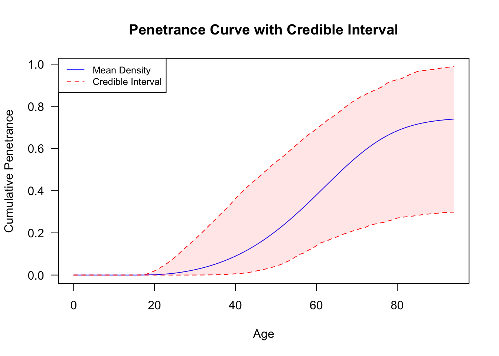
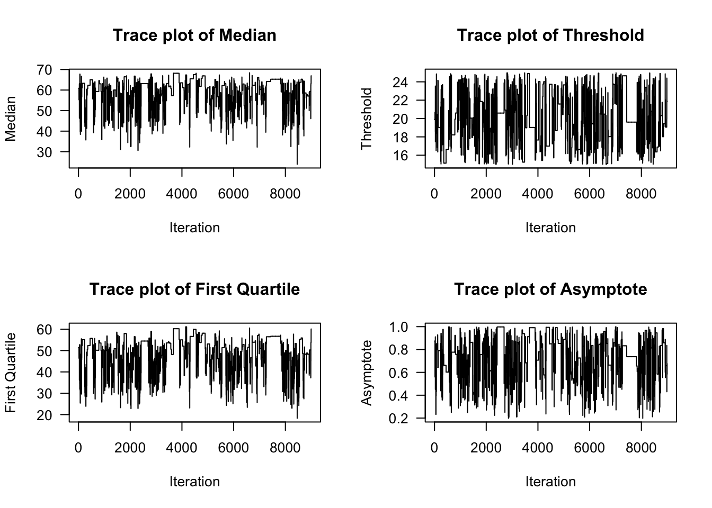
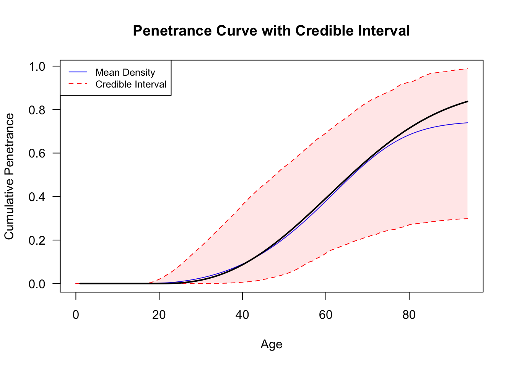
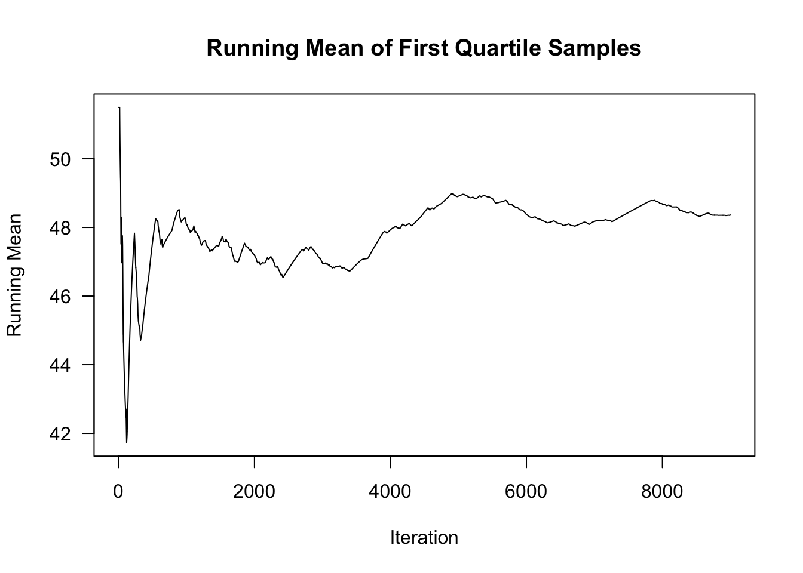
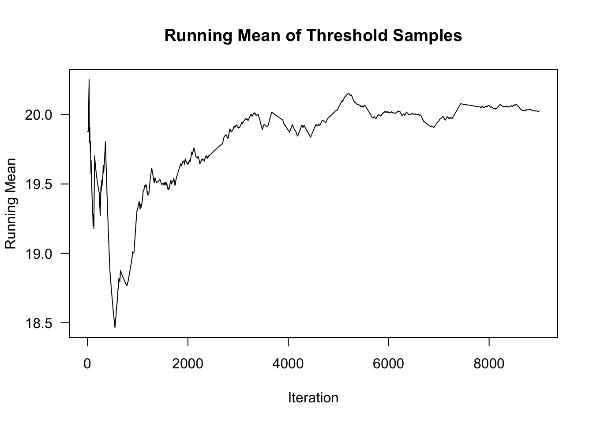
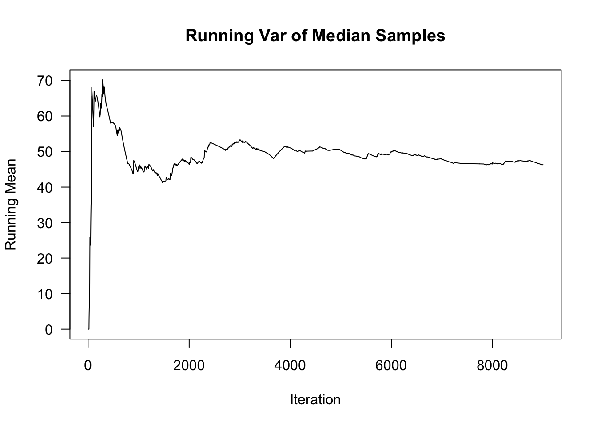
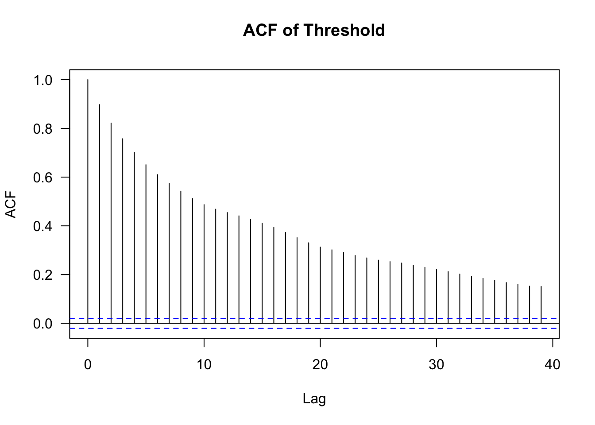

# Load the additonal families
load("/Users/nicolaskubista/Documents/Master Statistics/Master Thesis/Code/peelingpearingestim/simFamilies_C_1000_nocen_selected300.RData")
dat<- simFamilies_C_1000_nocen_selected300
# Data Prep
for (i in seq_along(dat)) {
if ("ID" %in% colnames(dat[[i]])) {
colnames(dat[[i]])[colnames(dat[[i]]) == "PedigreeID"] <- "FamilyID"
}
}
# Data Prep
for (i in seq_along(dat)) {
if ("ID" %in% colnames(dat[[i]])) {
colnames(dat[[i]])[colnames(dat[[i]]) == "ID"] <- "SubjectID"
}
}
for (i in seq_along(dat)) {
# Add a new column "PedigreeID" with the list number
dat[[i]]$PedigreeID <- i
}
# Exploring different priors
prior_params_BRCA1 <- list(
asymptote = list(g1 = 1, g2 = 1),
threshold = list(min = 15, max = 25),
median = list(m1 = 2, m2 = 2),
first_quartile = list(q1 = 6, q2 = 3)
)
# Run Estimation procedure with default prior setting
# Main Estimation for Female
out_sim_10k_simC300 <- PenEstim(
data = dat,
cancer_type = "Breast", gene_input = "BRCA1", n_chains = 4, n_iter_per_chain = 10000,
prior_params = prior_params_BRCA1, af = 0.9, burn_in = 0.1, sex = "Female"
)Warning in PenEstim(data = dat, cancer_type = "Breast", gene_input = "BRCA1", :
Low acceptance rate. Please consider running the chain longer.Rejection rates: 0.9003 0.9025 0.9125 0.9102 

# print summary stats
out_sim_10k_simC300$summary_stats Median threshold First_Quartile Asymptote_Value
Min. :23.84 Min. :15.00 Min. :18.27 Min. :0.1974
1st Qu.:54.79 1st Qu.:17.79 1st Qu.:43.68 1st Qu.:0.6219
Median :59.93 Median :19.90 Median :50.10 Median :0.8039
Mean :58.62 Mean :20.10 Mean :48.60 Mean :0.7528
3rd Qu.:63.74 3rd Qu.:22.52 3rd Qu.:54.58 3rd Qu.:0.9130
Max. :68.57 Max. :24.99 Max. :61.32 Max. :0.9999 plot_traceSingle(out_sim_10k_simC300$results[[1]])
ages <- 1:94
plot_penetrance(out_sim_10k_simC300$combined_chains, prob = 0.95, max_age = 94)
lines(ages, pweibull(ages - 20, 2.5, 50)*0.9, type = "l", lwd=2)
# Plot the running mean
runFQ<- running_mean(out_sim_10k_simC300$results[[1]]$first_quartile_samples)
runMed <- running_mean(out_sim_10k_simC300$results[[1]]$median_samples)
runThreshold <- running_mean(out_sim_10k_simC300$results[[1]]$threshold_samples)
runAsy <- running_mean(out_sim_10k_simC300$results[[1]]$asymptote_samples)
# Plot running mean
plot(runFQ, type = "l", xlab = "Iteration", ylab = "Running Mean", main = "Running Mean of First Quartile Samples")
plot(runMed, type = "l", xlab = "Iteration", ylab = "Running Mean", main = "Running Mean of Median Samples")
plot(runThreshold, type = "l", xlab = "Iteration", ylab = "Running Mean", main = "Running Mean of Threshold Samples")
plot(runAsy, type = "l", xlab = "Iteration", ylab = "Running Mean", main = "Running Mean of Asymptote Samples")
# Plot the running var
runVFQ<- running_variance(out_sim_10k_simC300$results[[1]]$first_quartile_samples)
runVMed <- running_variance(out_sim_10k_simC300$results[[1]]$median_samples)
runVThreshold <- running_variance(out_sim_10k_simC300$results[[1]]$threshold_samples)
runVAsy <- running_variance(out_sim_10k_simC300$results[[1]]$asymptote_samples)
# Plot running var
plot(runVFQ, type = "l", xlab = "Iteration", ylab = "Running Mean", main = "Running Var of First Quartile Samples")
plot(runVMed, type = "l", xlab = "Iteration", ylab = "Running Mean", main = "Running Var of Median Samples")
plot(runVThreshold, type = "l", xlab = "Iteration", ylab = "Running Mean", main = "Running Var of Threshold Samples")
plot(runVAsy, type = "l", xlab = "Iteration", ylab = "Running Mean", main = "Running Var of Asymptote Samples")
# Autocorrelation plots
acf(out_sim_10k_simC300$results[[1]]$first_quartile_samples, main = "ACF of First Quartile")
acf(out_sim_10k_simC300$results[[1]]$median_samples, main = "ACF of Median")
acf(out_sim_10k_simC300$results[[1]]$threshold_samples, main = "ACF of Threshold")
acf(out_sim_10k_simC300$results[[1]]$asymptote_samples, main = "ACF of Asymptote")
# plot the scatterplot with the median and first quartile
plot(out_sim_10k_simC300$combined_chains$median_results, out_sim_10k_simC300$combined_chains$first_quartile_results, xlim = c(1,100), ylim = c(1,100))
abline(a=0, b=1, col="red") # This draws a red line with slope 1 passing through the origin